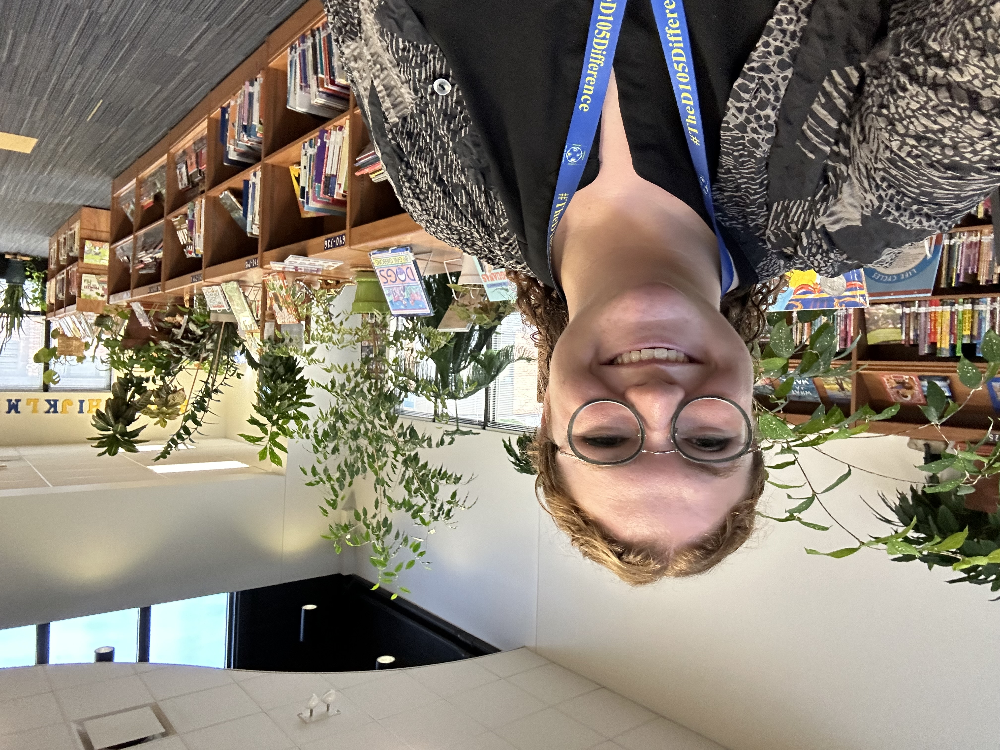

Welcome to my Portfolio! My name is Madison Wagner (she/her) and I am a MLIS student at Dominican University. I will graduate December 2023 from the School Library Media Program. Additionally, I am the Library Media Specialist for Gurrie Middle School in La Grange, IL as of October 2023. This position allows me to develop collections, services, and programs of the library to support the greater school community of students and staff. I make decisions driven by diversity and inclusion to maintain the library as a safe space, aiming promotion of both academic and personal growth for students. This Portfolio serves as a glimpse of my my schooling and career in librarianship. Thank you for visiting!
